Code
library(tidyverse)
library(ggplot2)
library(here)
knitr::opts_chunk$set(echo = TRUE, warning=FALSE, message=FALSE)library(tidyverse)
library(ggplot2)
library(here)
knitr::opts_chunk$set(echo = TRUE, warning=FALSE, message=FALSE)The NBA Player Stats dataset was sourced from Basketball-Reference.com, a reputable source for broad categories of professional basketball statistics. These statistics are collected by the leagues statisticians through the season and are regarded as very reliable. The dataset includes statistics for every player in the NBA (2374) from the 1997-1998 season to the 2021-2022 season, across 38 teams, so it contains a massive amount of information. This information is broken down into 14573 player-season instances (rows) described by 31 variables (columns). The variable keys and descriptions are listed below for explanation along with their type and cases.
Rk: index Player: player name (2374) Pos: position (string) (5 different main cases, 11 combination cases) Tm: team (string) (38) G: games played (numeric) GS: games started (numeric) MP: minutes played per game (numeric) FG: field goals made per game (numeric) FGA: field goals attempted per game (numeric) FG%: field goal percentage (numeric) 3P: three-pointers made per game (numeric) 3PA: three-pointers attempted per game (numeric) 3P%: three-point percentage (numeric) 2P: two-pointers made per game (numeric) 2PA: two-pointers attempted per game (numeric) 2P%: two-point percentage (numeric) eFG%: effective field goal percentage (numeric) FT: free throws made per game (numeric) FTA: free throws attempted per game (numeric) FT%: free throw percentage (numeric) ORB: offensive rebounds per game (numeric) DRB: defensive rebounds per game (numeric) TRB: total rebounds per game (numeric) AST: assists per game (numeric) STL: steals per game (numeric) BLK: blocks per game (numeric) TOV: turnovers per game (numeric) PF: personal fouls per game (numeric) PTS: points per game (numeric) Year: NBA season year (ordinal) (25)
NBA<- here("posts","_data","NBA_Player_Stats.csv")%>%
read_csv()
dim(NBA)[1] 14573 31n_distinct(NBA$Player)[1] 2374n_distinct(NBA$Pos)[1] 16n_distinct(NBA$Tm)[1] 38n_distinct(NBA$Year)[1] 25I chose to focus on data from the Celtics’ and Warriors’ 2021-2022 season in order to compare the two teams who appeared in the NBA finals across some of the major statistics included in the NBA_player_Stats dataset.
last_season <- NBA[NBA$Year == '2021-2022',]
Celtics <- last_season[last_season$Tm == 'BOS',]
Warriors <- last_season[last_season$Tm == 'GSW',]Next, I recoded the variable keys into the categories/statistics that they describe, for ease of interpretation.
colnames(Celtics) <- c("Index", "Player", "Position", "Age", "Team", "Games Played", "Games Started", "Minutes Played", "Field Goals Made", "Field Goals Attempted", "Field Goal Percentage", "Three Point Made", "Three Point Attempted", "Three Point Percentage", "Two Point Made", "Two Point Attempted", "Two Point Percentage", "Effective Field Goal Percentage", "Free Throws Made", "Free Throws Attempted", "Free Throw Percentage", "Offensive Rebounds", "Defensive Rebounds", "Total Rebounds", "Assists", "Steals", "Blocks", "Turnovers", "Personal Fouls", "Points", "Season")
colnames(Warriors) <- c("Index", "Player", "Position", "Age", "Team", "Games Played", "Games Started", "Minutes Played", "Field Goals Made", "Field Goals Attempted", "Field Goal Percentage", "Three Point Made", "Three Point Attempted", "Three Point Percentage", "Two Point Made", "Two Point Attempted", "Two Point Percentage", "Effective Field Goal Percentage", "Free Throws Made", "Free Throws Attempted", "Free Throw Percentage", "Offensive Rebounds", "Defensive Rebounds", "Total Rebounds", "Assists", "Steals", "Blocks", "Turnovers", "Personal Fouls", "Points", "Season")My research question focuses the differences between the Celtics and Warriors starters and bench player statistics. Analysts often focus on the performance of these two groups when discussing team match-ups, as teams often differ in the contribution of their starters and bench, in terms of efficiency, minutes played, etc. Teams with greater contribution from their bench players are said to have greater depth, which can allow a team to withstand injuries throughout the season, for top players to perform optimally, and for coaches to adjust personnel for specific match-ups. In order to avoid players with limited games played to bias the statistics collected, I removed players who played less than ten games. I then ordered the players from each team by descending order of games started, selected the first five as the starting unit, and the remaining players as the bench unit.
Celtics <- Celtics[(Celtics$"Games Played" >= 10),]
Celtics_by_starts <- Celtics[order(Celtics$"Games Started",decreasing=TRUE),]
Celtics_starters <- Celtics_by_starts[1:5,]
Celtics_bench <- Celtics_by_starts[6:20,]
Warriors <- Warriors[(Warriors$"Games Played" >= 10),]
Warriors_by_starts <- Warriors[order(Warriors$"Games Started",decreasing=TRUE),]
Warriors_starters <- Warriors_by_starts[1:5,]
Warriors_bench <- Warriors_by_starts[6:16,]ggplot(data=Celtics_starters, aes(x=Celtics_starters$"Player", y=Celtics_starters$"Games Played")) + geom_bar(stat="identity") +
theme(axis.text.x = element_text(angle = 90, vjust = 1, hjust=1)) +labs(title = "Celtics Starters Games Played", x = "Player", y = "Number of Games Played")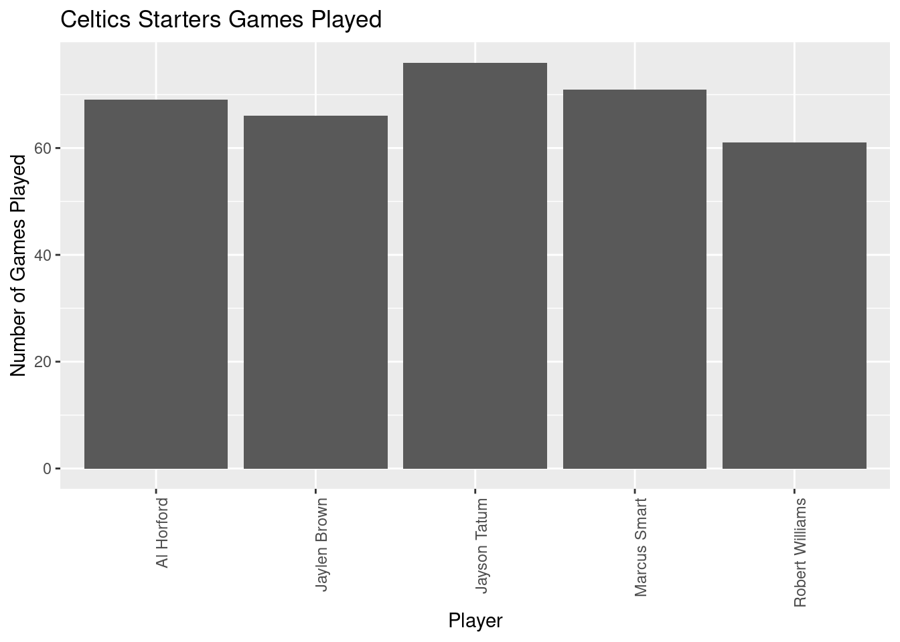
mean(Celtics_starters$"Games Played")[1] 68.6ggplot(data=Warriors_starters, aes(x=Warriors_starters$"Player", y=Warriors_starters$"Games Played")) + geom_bar(stat="identity") +
theme(axis.text.x = element_text(angle = 90, vjust = 1, hjust=1))+ labs(title = "Warriors Starters Games Played", x = "Player", y = "Number of Games Played")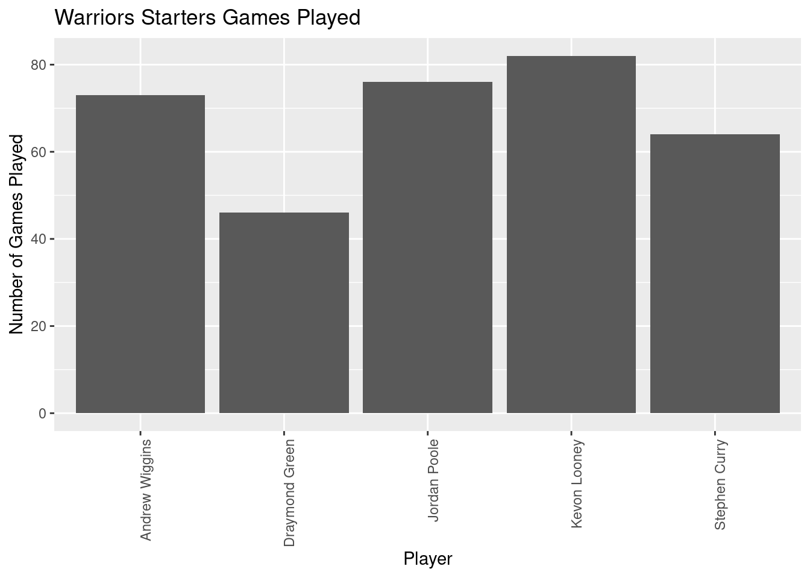
mean(Warriors_starters$"Games Played")[1] 68.2ggplot(data=Celtics_bench, aes(x=Celtics_bench$"Player", y=Celtics_bench$"Games Played")) + geom_bar(stat="identity") +
theme(axis.text.x = element_text(angle = 90, vjust = 1, hjust=1)) + labs(title = "Celtics Bench Games Played", x = "Player", y = "Number of Games Played")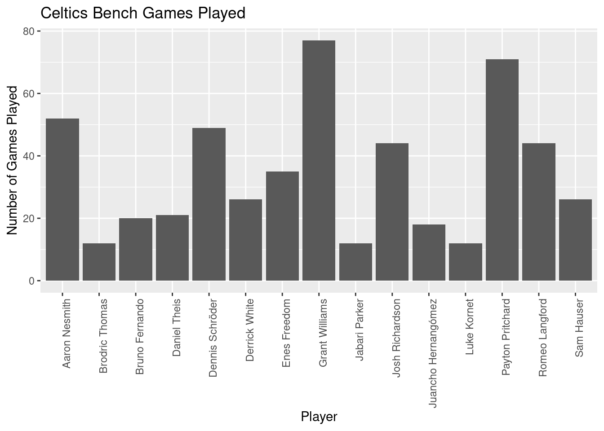
mean(Celtics_bench$"Games Played")[1] 34.6ggplot(data=Warriors_bench, aes(x=Warriors_bench$"Player", y=Warriors_bench$"Games Played")) + geom_bar(stat="identity") +
theme(axis.text.x = element_text(angle = 90, vjust = 1, hjust=1)) + labs(title = "Warriors Bench Games Played", x = "Player", y = "Number of Games Played")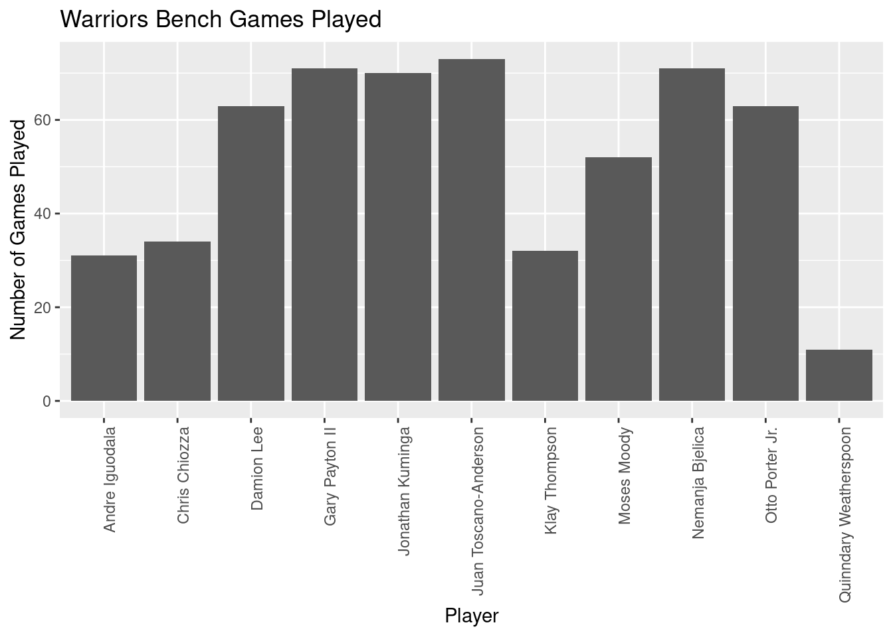
mean(Warriors_bench$"Games Played")[1] 51.90909ggplot(data=Celtics_starters, aes(x=Celtics_starters$"Player", y=Celtics_starters$"Minutes Played")) + geom_bar(stat="identity") +
theme(axis.text.x = element_text(angle = 90, vjust = 1, hjust=1)) +labs(title = "Celtics Starters Minutes Played", x = "Player", y = "Number of Minutes Played")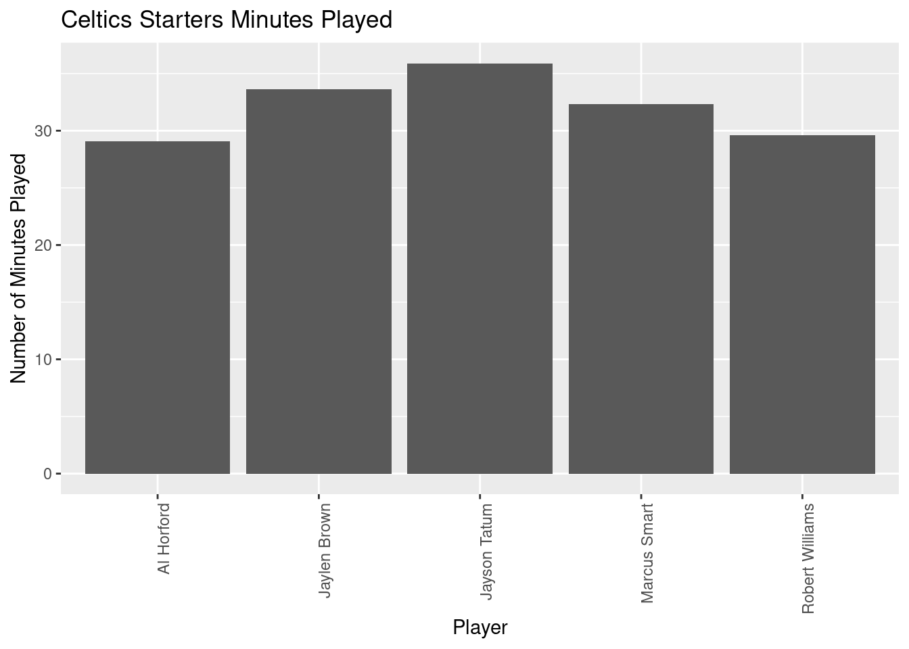
mean(Celtics_starters$"Minutes Played")[1] 32.1ggplot(data=Warriors_starters, aes(x=Warriors_starters$"Player", y=Warriors_starters$"Minutes Played")) + geom_bar(stat="identity") +
theme(axis.text.x = element_text(angle = 90, vjust = 1, hjust=1))+ labs(title = "Warriors Starters Minutes Played", x = "Player", y = "Number of Minutes Played")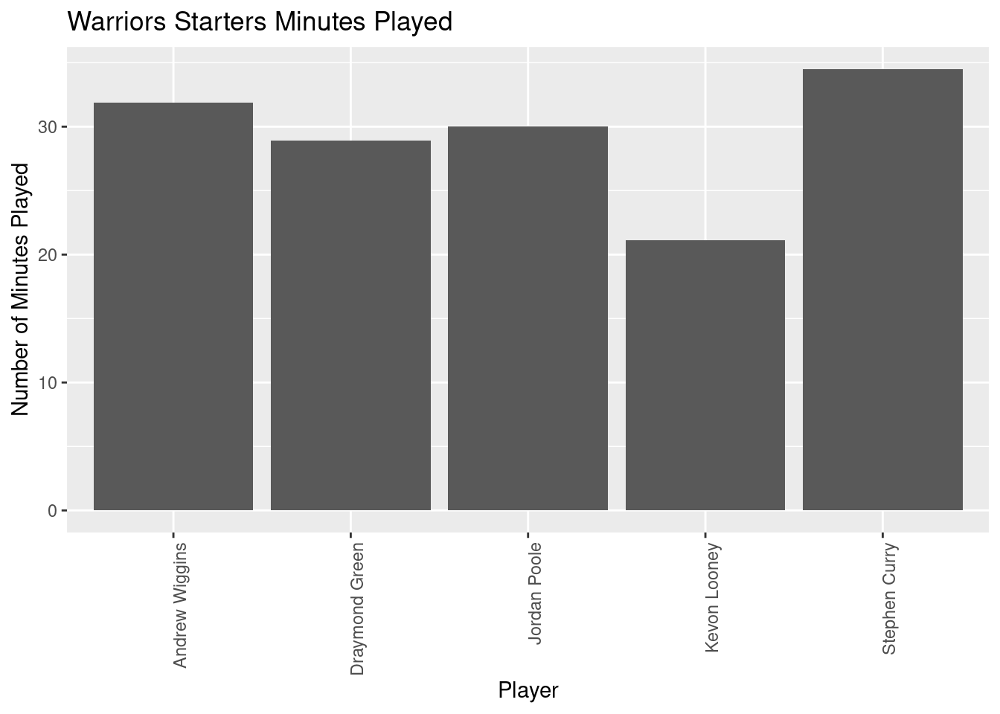
mean(Warriors_starters$"Minutes Played")[1] 29.28ggplot(data=Celtics_bench, aes(x=Celtics_bench$"Player", y=Celtics_bench$"Minutes Played")) + geom_bar(stat="identity") +
theme(axis.text.x = element_text(angle = 90, vjust = 1, hjust=1)) + labs(title = "Celtics Bench Minutes Played", x = "Player", y = "Number of Minutes Played")
mean(Celtics_bench$"Minutes Played")[1] 14.22667ggplot(data=Warriors_bench, aes(x=Warriors_bench$"Player", y=Warriors_bench$"Minutes Played")) + geom_bar(stat="identity") +
theme(axis.text.x = element_text(angle = 90, vjust = 1, hjust=1)) + labs(title = "Warriors Bench Minutes Played", x = "Player", y = "Number of Minutes Played")
mean(Warriors_bench$"Minutes Played")[1] 16.76364Celtics_starters_no_center <- Celtics_starters[Celtics_starters$Player != 'Robert Williams',]
ggplot(data=Celtics_starters_no_center, aes(x=Celtics_starters_no_center$"Player", y=Celtics_starters_no_center$"Three Point Percentage")) + geom_bar(stat="identity") +
theme(axis.text.x = element_text(angle = 90, vjust = 1, hjust=1)) +labs(title = "Celtics Starters Three Point Percentage", x = "Player", y = "Number of Three Point Percentage")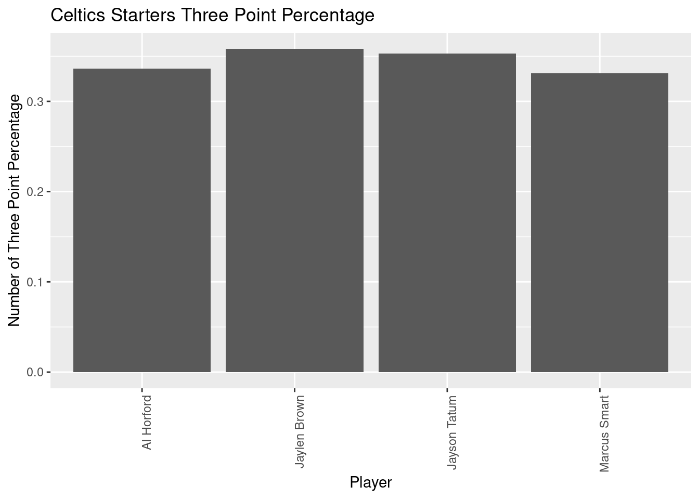
mean(Celtics_starters_no_center$"Three Point Percentage")[1] 0.3445Warriors_starters_no_center <- Warriors_starters[Warriors_starters$Player != 'Kevon Looney',]
ggplot(data=Warriors_starters_no_center, aes(x=Warriors_starters_no_center$"Player", y=Warriors_starters_no_center$"Three Point Percentage")) + geom_bar(stat="identity") +
theme(axis.text.x = element_text(angle = 90, vjust = 1, hjust=1))+ labs(title = "Warriors Starters Three Point Percentage", x = "Player", y = "Number of Three Point Percentage")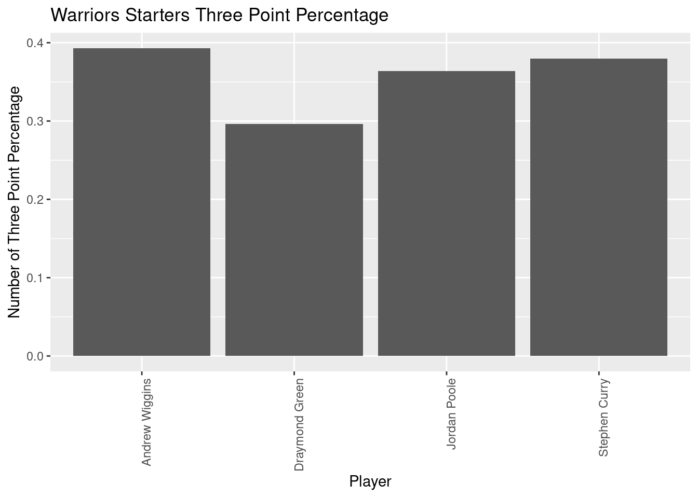
mean(Warriors_starters_no_center$"Three Point Percentage")[1] 0.35825Celtics_bench_no_center <- Celtics_bench[Celtics_bench$Player != 'Luke Cornet',]
ggplot(data=Celtics_bench_no_center, aes(x=Celtics_bench_no_center$"Player", y=Celtics_bench_no_center$"Three Point Percentage")) + geom_bar(stat="identity") +
theme(axis.text.x = element_text(angle = 90, vjust = 1, hjust=1)) + labs(title = "Celtics Bench Three Point Percentage", x = "Player", y = "Number of Three Point Percentage")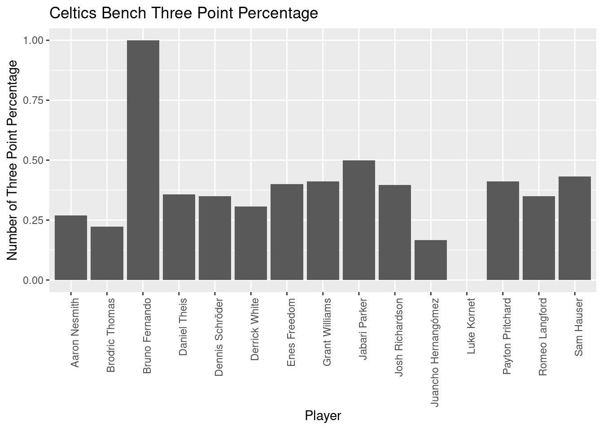
mean(Celtics_bench_no_center$"Three Point Percentage")[1] 0.3714667ggplot(data=Warriors_bench, aes(x=Warriors_bench$"Player", y=Warriors_bench$"Three Point Percentage")) + geom_bar(stat="identity") +
theme(axis.text.x = element_text(angle = 90, vjust = 1, hjust=1)) + labs(title = "Warriors Bench Three Point Percentage", x = "Player", y = "Number of Three Point Percentage")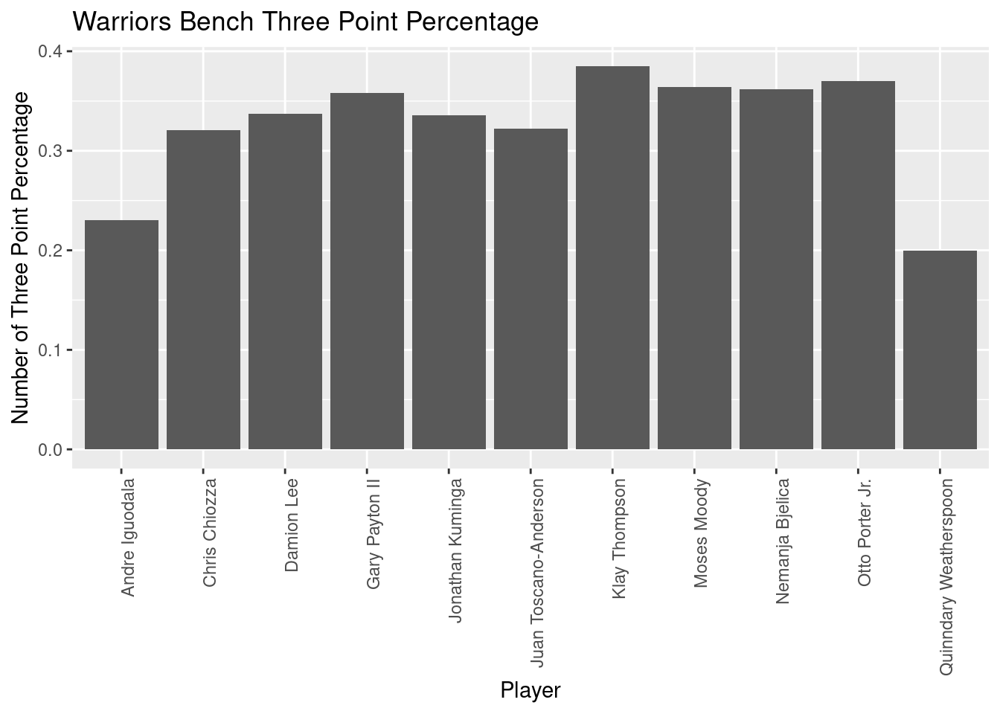
mean(Warriors_bench$"Three Point Percentage")[1] 0.3259091ggplot(data=Celtics_starters, aes(x=Celtics_starters$"Player", y=Celtics_starters$"Two Point Percentage")) + geom_bar(stat="identity") +
theme(axis.text.x = element_text(angle = 90, vjust = 1, hjust=1)) +labs(title = "Celtics Starters Two Point Percentage", x = "Player", y = "Number of Two Point Percentage")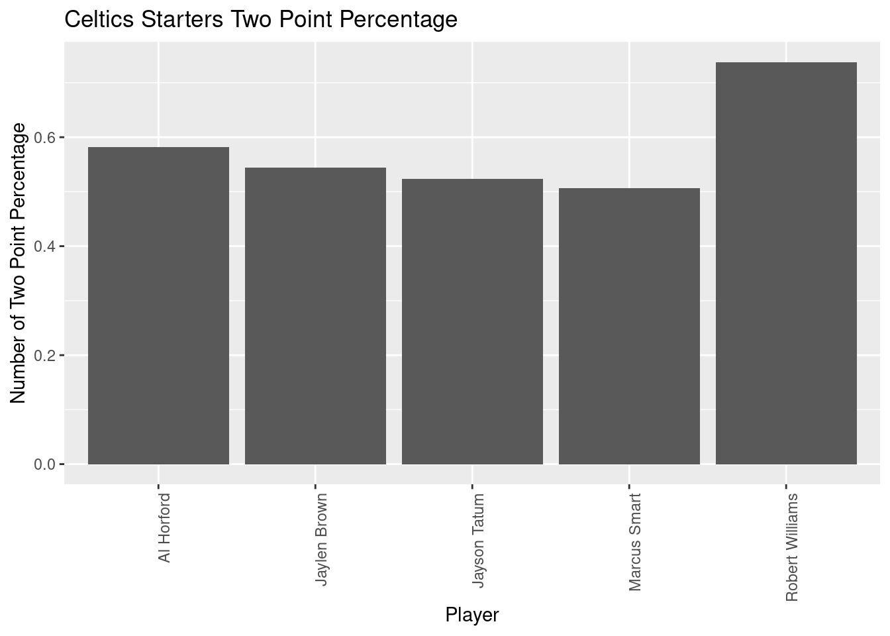
mean(Celtics_starters$"Two Point Percentage")[1] 0.5788ggplot(data=Warriors_starters, aes(x=Warriors_starters$"Player", y=Warriors_starters$"Two Point Percentage")) + geom_bar(stat="identity") +
theme(axis.text.x = element_text(angle = 90, vjust = 1, hjust=1))+ labs(title = "Warriors Starters Two Point Percentage", x = "Player", y = "Number of Two Point Percentage")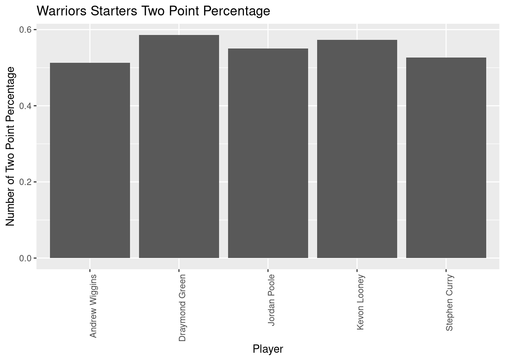
mean(Warriors_starters$"Two Point Percentage")[1] 0.5498ggplot(data=Celtics_bench, aes(x=Celtics_bench$"Player", y=Celtics_bench$"Two Point Percentage")) + geom_bar(stat="identity") +
theme(axis.text.x = element_text(angle = 90, vjust = 1, hjust=1)) + labs(title = "Celtics Bench Two Point Percentage", x = "Player", y = "Number of Two Point Percentage")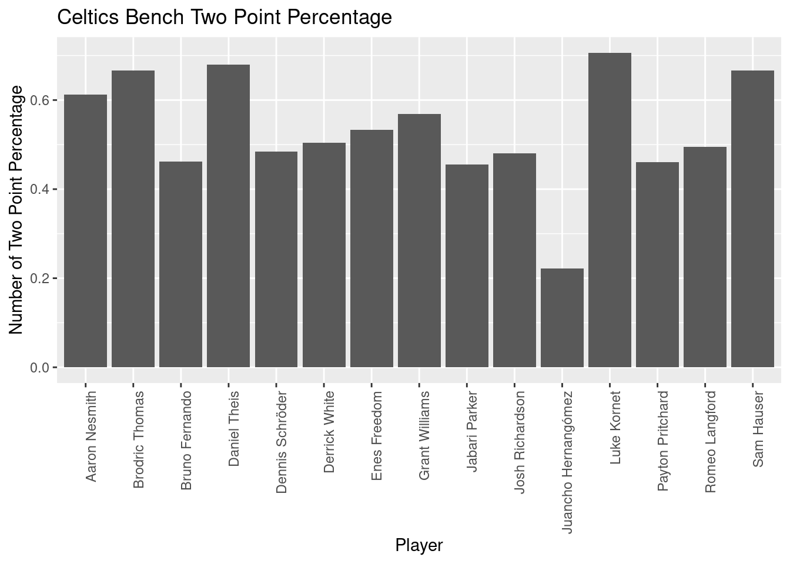
mean(Celtics_bench$"Two Point Percentage")[1] 0.5332ggplot(data=Warriors_bench, aes(x=Warriors_bench$"Player", y=Warriors_bench$"Two Point Percentage")) + geom_bar(stat="identity") +
theme(axis.text.x = element_text(angle = 90, vjust = 1, hjust=1)) + labs(title = "Warriors Bench Two Point Percentage", x = "Player", y = "Number of Two Point Percentage")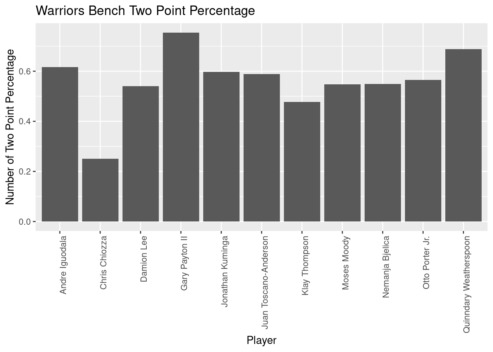
mean(Warriors_bench$"Two Point Percentage")[1] 0.5613636Based on the above analysis, the main difference between the Celtics and the Warriors was the greater contribution of the Warriors bench, who averaged a much larger number of games played per player and greater minutes played. This finding tracks with one of the aspects of the Celtics-Warriors NBA Finals that was discussed, the poor performance of Jayson Tatum, the Celtics’ best player. Because the Celtics’ bench players averaged less games played and minutes played per game, Tatum spent more time on the floor and reported being mentally and physically fatigued during the duration of the series. Clearly Warriors’ bench and their prominent contribution played a major role in their Finals victory during the 2021-2022 season.
My analysis of this dataset does not address the less quantifiable aspects of these basketball teams, such as chemistry between players and the influence of coaches or home-town fans. It would be interesting to explore the relationship between the performance of starters and bench players as it relates to these other variables, such as the difference in scoring efficiency for bench players at their home-court versus during away games. In putting together this project, I learned that additional adjustments to datasets that you didn’t expect are often necessary, such as the removal of players that don’t shoot threes from the analysis of three point efficiency. Overall, it would be fascinating to compare the statistics of the Celtics and Warriors following this season, where the Celtics are off to a fantastic start and the Warriors hover in the middle of their division to see if these findings hold true.
R Core Team (2022). R: A language and environment for statistical computing. R Foundation for Statistical Computing, Vienna, Austria. URL https://www.R-project.org/.
Wickham, H., & Grolemund, G. (2016). R for data science: Visualize, model, transform, tidy, and import data. OReilly Media.
Etocco. “NBA_Player_Stats.csv.” “Data.world.” 2022. https://data.world/etocco/nba-player-stats